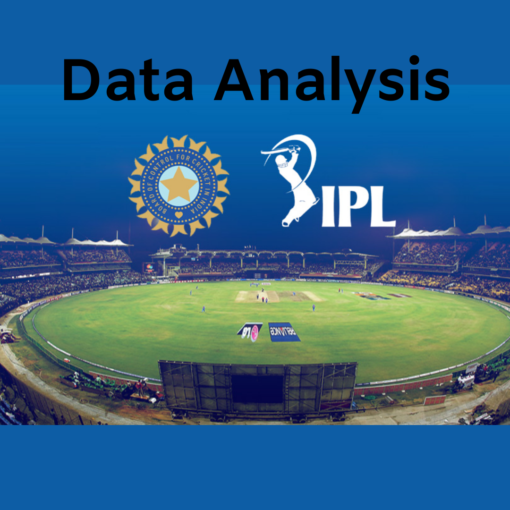
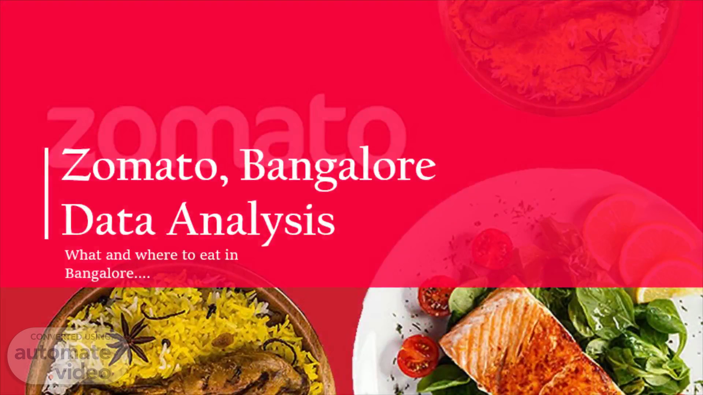

Data! data! Data! Data is everywhere. Data is the new Oil, and it Fasinates me. A graduate with Data Science specialization,
My passion for this field got me into pursuing Data Science. A sincere, ambitious and a motivated person. I believe that learning and gaining experience must never be stopped.
I am very organised person wth creative thinking and computer skills. I am a quick learner, learning and improving myself and my skills on daily basis.


La Liga is the men's top professional football division of the Spanish football league system. The dataset contains information on all the teams that have participated in all the past tournaments. It has data about how many goals each team scored, conceded, how many times they came within the first 6 positions, how many seasons they have qualified, their best position in the past, etc.
Developed loan prediction system using machine learning, so the system automatically selects the eligible candidates. This is helpful to both bank staff and applicant. The time period for the sanction of loan will be drastically reduced. In this project we are predicting the loan data by using some machine learning algorithms.

The data set we are using here is the IPL dataset, which contains the details regarding the winner and match stats. It contains the details like teams played, winner, venue of the match, won by how many wickets and runs, toss decision, whether DLS applied or not, names of the umpires etc.

This project provides insights of covid data. The SQL analysis is implemented on Microsoft SQL Server.
This is an SQL COVID-19 exploration project which focuses on cases, deaths, and vaccinations. I believe more explorations can be done as the purpose of this project was to apply basic knowledge of SQL in exploring a real-life scenario(COVID-19 Outbreak).
Created Dashboard utilizing Power BI for a Superstore data.
The visualizations used for this power BI are:
● Map showing the Profit by City
● Sales.
● Donut chart showing sales by Segment
● Top 5 loss making Products.
● Top 5 profit making Products.
● Different categories to select i.e, Region and Year.
● Total sales, quantity, Returned orders and average of delivery days.

Created Interactive dashboard using powerBI on Zomato dataset.
Key insights:
● Top 5 restaurants
● Average bill amount
● Average rating
● Votes
●Cuisines word cloud
●Satisfaction rate via Gauge chart, agent details via table.
●Line chart depicts the number of calls over a period of time.
●Various other charts have been used to show trends in a clear and better manner.